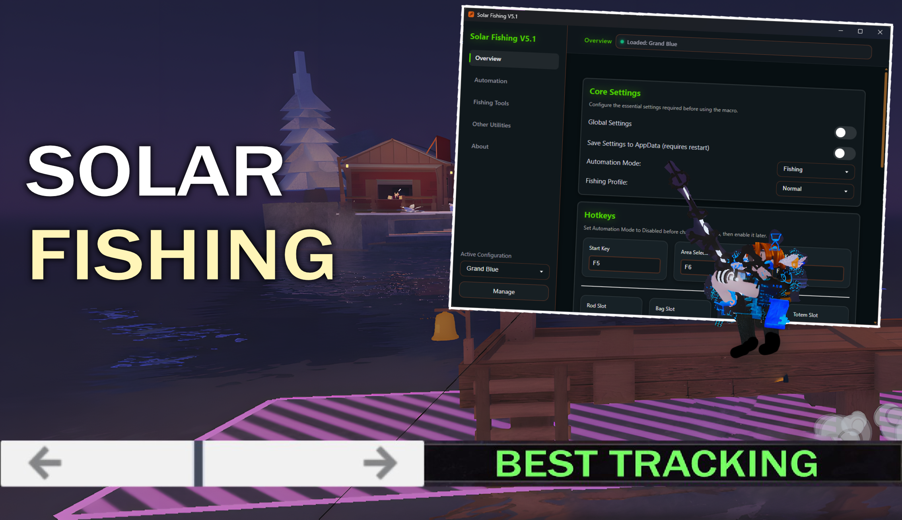

A lightweight Roblox Fisch fishing macro built for simplicity and long-term stability. Automates the core fishing process with a streamlined setup and fully transparent AutoHotkey source code.
Download Solar Fishing Lite, a lightweight Roblox fishing macro focused on reliable core fishing automation. Built with AutoHotkey for a simple, transparent, and stable experience with minimal setup required.
🔎 Fully transparent: The complete source code is available on GitHub for anyone who wants to review how it works.

Solar Fishing is an advanced automation macro for Roblox Fisch, designed to provide reliable, hands-free fishing with almost no setup.
🚀 Downloading and using Solar Fishing Lite is straightforward.
Step 1: Download the Solar Fishing Lite .ahk script from the Downloads panel on the right.
Step 2: Double-click the .ahk file to launch Solar Fishing Lite.
Step 3: Open Roblox Fisch and click Detect Roblox in Solar Fishing Lite. Select your rod and configure your preferred settings.
That's it! Solar Fishing Lite will work perfectly.
✅ Supports Windows 10/11 • macOS • Linux • Works with all rods • Auto-updates available